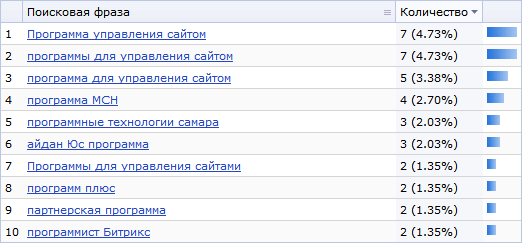
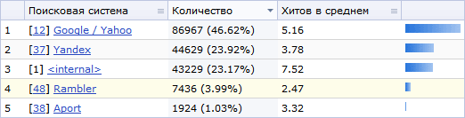

Поисковые фразы и переходы с поисковых систем
Данная форма отображает информацию по поисковым фразам, по которым Ваш сайт был найден в поисковой системе, а также фразы, которые были использованы при внутреннем поиске по сайту.
Фильтр
| Параметр | Описание |
|---|
| Поисковая фраза* | Маска поисковых фраз, которые требуется отобразить. |
| ID* | ID записи в базе данных, содержащей информацию по поисковой фразе, с которой зашли на сайт. |
| Поисковая система* | Фильтр по ID и наименованию поисковой системы. Вы можете воспользоваться выпадающим списком всех поисковых систем, занесенных в базу данных. |
| Дата | Дата занесения в базу поисковой фразы. |
| Куда пришли* | Сайт и страница, на которую пришли с поисковой фразой (при внутреннем поиске - последняя страница, на которую перешли с результатов поиска).
В выпадающем списке (ошибка 404) можно указать, отображать ли только запросы несуществующих страниц. |
| ID ссылающегося* | ID в таблице ссылающихся сайтов. В случае внешней поисковой системы - помимо выделения из поисковой фразы, система заносит ссылающуюся страницу в таблицу ссылающихся сайтов. |
| ID сессии* | ID сессии, в течение которой была занесена в базу поисковая фраза. |
| Показать все условия | Отражает все поля фильтра. |
| Скрыть все условия | Скрывает все поля фильтра, кроме полей по умолчанию. |
* - для данных полей вы можете воспользоваться специальными логическими выражениями.
Чтобы установить фильтр по заданным критериям поиска, нажмите на кнопку Найти. Для отображения всех фраз нажмите на кнопку Отменить.
Контекстная панель
| Кнопка | Описание |
|---|
| Настроить | Позволяет перейти к диалогу настройки внешнего вида отчетной формы. |
| Excel | Экспортирует данные из таблицы в формат MS Excel. |
Таблица (список переходов и внутренний поиск)
| ID | Поисковая фраза | Поисковая система | Дата | Куда пришли | Ссыл. | Сессия |
|---|
| [1] | [2] | [3] | [4] | [5] | [6] | [7] |
| Всего: [8] |
|---|
- Идентификатор перехода по поисковой фразе.
- Собственно поисковая фраза.
- Идентификатор и имя поисковой системы (при внутреннем поиске по сайту поисковая система – <internal>). Ссылка на идентификаторе открывает список поисковых систем с фильтром, установленным на эту систему. Ссылка на имени поисковой системы переключает данную форму в режим группировки по фразам именно этой поисковой системы.
- Дата занесения поисковой фразы в базу.
- Мнемоническое имя сайта и адрес страницы из результатов поиска, на которую кликнул посетитель. Ссылка с именем сайта открывает форму настроек этого сайта. Ссылка на адресе страницы открывает ее для просмотра.
- Идентификатор ссылающегося сайта. Ссылка открывает список ссылающихся сайтов с фильтром, установленным на этот сайт.
- Идентификатор сессии, в течение которой поисковая фраза была занесена в базу. Ссылка открывает список сессий с фильтром, установленным на эту сессию.
- Количество фраз, выбранных из базы данных.
Таблица (список поисковых фраз)
| Поисковая фраза | Количество | |
|---|
| [1] | [2] | [3] | [4] |
| Выбрано[5] |
|---|
- Порядковый номер фразы.
- Поисковая фраза. Ссылка на фразе добавляет ее в фильтр.
- Количество использований данной поисковой фразы. Процентное соотношение количества запросов по поисковой фразе к общему количество поисковых фраз в таблице.
- Элемент диаграммы.
- Количество фраз, выбранных из базы данных.
Пример таблицы

Таблица (список поисковых систем)
| Поисковая система | Количество | Хитов в среднем | |
|---|
| [1] | [2] | [3] | [4] | [5] |
| Выбрано[6] |
|---|
- Порядковый номер записи.
- ID и имя поисковой системы. Ссылка на идентификаторе открывает список поисковых систем с фильтром, установленным на эту систему. Ссылка на имени поисковой системы переключает данную форму в режим группировки по фразам именно этой поисковой системы.
- Количества переходов с данной поисковой системы; доля переходов с данной поисковой системы.
- Количество хитов в среднем у посетителей с данной поисковой системы.
- Элемент диаграммы.
- Количество поисковых систем, выбранных из базы данных.
Пример таблицы
